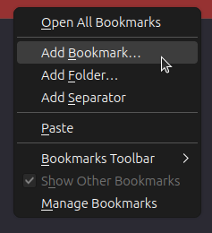
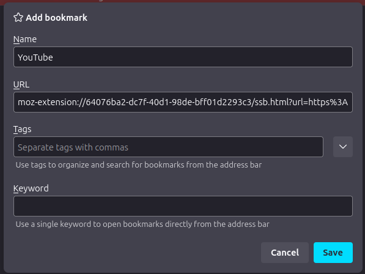

Create a blank bookmark using "Bookmarks Toolbar", "Bookmarks Side Panel" or using "Manage Bookmarks"
Give the name of your app and paste the SSB url.
Click to save! And you're ready to go!
Create a blank shortcut

Click to browse

And choose your browser from "Browse" window

Click to "OK" and click to end of inputbar that labelled by "Write item location" and write a space (one time) and quote (two times). And paste the SSB url between quotes. Later click "OK"

Give a name for your app. And click to "End" button.

Ready your shortcut!

You can run your application with opening launcher

Note: This guide will assume you have a icon file of the website.
Right click to the shortcut and click to "Properties".

Click to "Change Icon".

Click to "Browse" and choose icon

Click to "OK"

Click to "Apply"

And the icon is changed!

[Desktop Entry]
Encoding=UTF-8
Version=1.0
Type=Application
Terminal=false
Exec={application} "{ssb-url}"
Name={name}
Icon={icon}
Replace the {} areas with their descriptions
{application}: With browser command like firefox or librewolf
{ssb-url}: With url of SSB url of webpage
{name}: With app name
{icon}: With app icon (also you can use applications-internet)